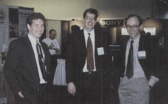
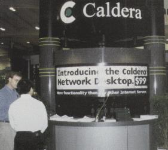
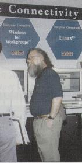

UniForum '96, now billed as a Unix and Open Systems show, attracted about 20,000 attendees in San Francisco in February.
UniForum '96, now billed as a Unix and Open Systems show, attracted about 20,000 attendees in San Francisco in February. It included 90 tutorials, seminars, and keynotes from Lew Platt, of Hewlett-Packard, and Scott McNealy of Sun MicroSystems.
Left to right: Adam Richter of Yggdrasil Computing, David Fickes of Prime Time Freeware and Bob Young of Red Hat Software, standing in front of the WGS Booth, with Mark Bolzern in the background.
UniForum was founded in 1981 to advance the use and standardization of Unix and open systems.
Caldera demonstrated the Caldera Network Desktop at Uniforum '96.
Besides offering a Unix-focused education forum, UniForum provided an opportunity for companies to exhibit their products. One section of the exhibition floor was labelled “Linux Area” and included the booths of Linux International, WorkGroup Solutions, SSC, and Enhanced Software Technologies. Other vendors with Linux products, such as Caldera and Comtrol, were not far away.
John “maddogg” Hall at the Digital Equipment Corporation Booth.